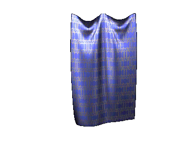

|
Прядение и ткачество |
|
| Прядение и ткачество в
Древней Руси были наиболее распространенными
ремеслами. Ткани изготовлялись из шерсти, льна и конопли. Они различались по материалу, фактуре и окраске. Обычная льнаная ткань для рубашек и полотенец называлась «полотном» и «усцинкой». Грубая ткань для верхней одежды называлась «вотолой». Из шерстяных тканей наиболее распространенными были «понява» и «власяница», к более грубым тканям относились «ярига» и «сермяга». Древние ткачи использовали несколько видов переплетений. Самым трудоемким процессом было производство нити. Нити пряли на ручном веретене. В древнерусских городах XII века ткачество стало уже ремеслом, в то время как прядение так и ткачество были еще обычной домашней деятельностью женщин деревни. |
|
Текст и
иллюстрации (c) 1997 Snowball Interactive Entertainment, Inc. |